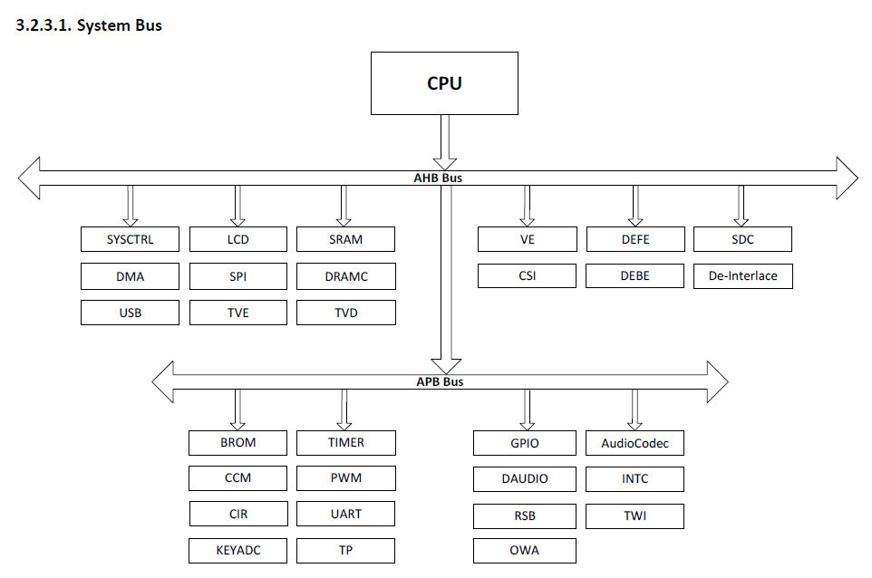
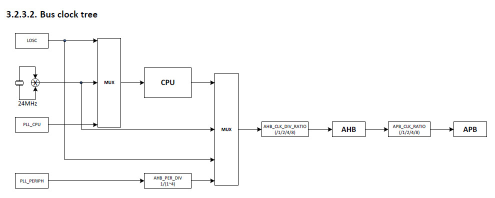
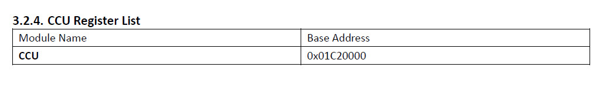
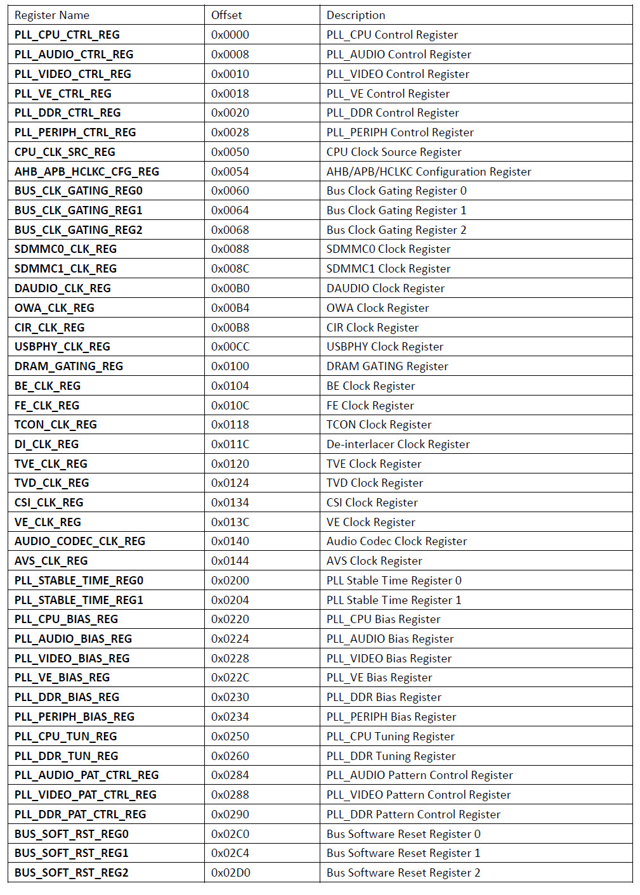
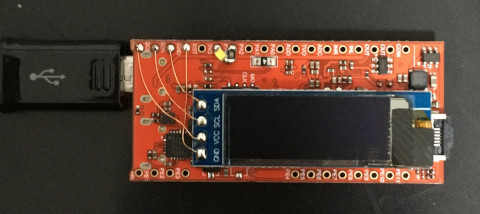
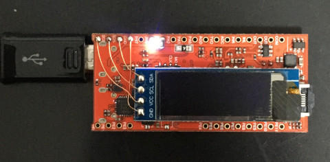

參考資料：
http://nano.lichee.pro/
https://mangopi.org/mangopi_r
System Bus




| 模組 | 預設 | 範圍 |
|---|---|---|
| CPU | 408MHz | 200MHz~2.6GHz |
| AUDIO | 24.571MHz | 20MHz~200MHz |
| VIDEO | 297MHz | 30MHz~600MHz |
| VE | 210MHz | 30MHz~600MHz |
| DDR | 312MHz | 24MHz~3GHz |
| PERIPH | 600MHz | 200MHz~1.8GHz |
CPU速度計算公式
PLL = (24MHz*N*K)/(M*P) N = 30 K = 1 M = 1 P = 1 PLL = (24MHz*30*1)/(1*1) = 720MHz
main.s
.global _start
.equiv CCU_BASE, 0x01c20000
.equiv GPIO_BASE, 0x01c20800
.equiv PLL_CPU_CTRL_REG, 0x0000
.equiv CPU_CLK_SRC_REG, 0x0050
.equiv PA, (0x24 * 0)
.equiv PORT_CFG0, 0x00
.equiv PORT_DATA, 0x10
.arm
.text
_start:
.long 0xea000016
.byte 'e', 'G', 'O', 'N', '.', 'B', 'T', '0'
.long 0, __spl_size
.byte 'S', 'P', 'L', 2
.long 0, 0
.long 0, 0, 0, 0, 0, 0, 0, 0
.long 0, 0, 0, 0, 0, 0, 0, 0
_vector:
b reset
b .
b .
b .
b .
b .
b .
b .
reset:
ldr r0, =CCU_BASE
ldr r1, =(1 << 31) | (29 << 8)
str r1, [r0, #PLL_CPU_CTRL_REG]
1:
ldr r1, [r0, #PLL_CPU_CTRL_REG]
tst r1, #(1 << 28)
beq 1b
ldr r0, =CCU_BASE
ldr r1, =(3 << 16)
str r1, [r0, #CPU_CLK_SRC_REG]
ldr r0, =GPIO_BASE
ldr r1, =0x1000
str r1, [r0, #(PA + PORT_CFG0)]
0:
ldr r1, =0x08
str r1, [r0, #(PA + PORT_DATA)]
ldr r2, =100000
1:
subs r2, #1
bne 1b
ldr r1, =0x00
str r1, [r0, #(PA + PORT_DATA)]
ldr r2, =100000
2:
subs r2, #1
bne 2b
b 0b
.end
完成

